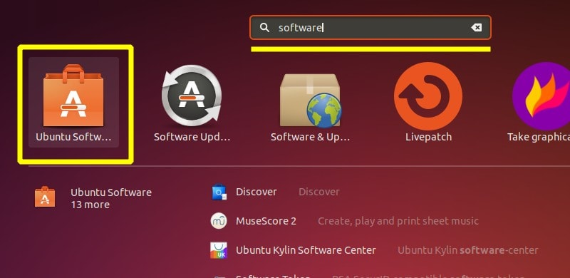
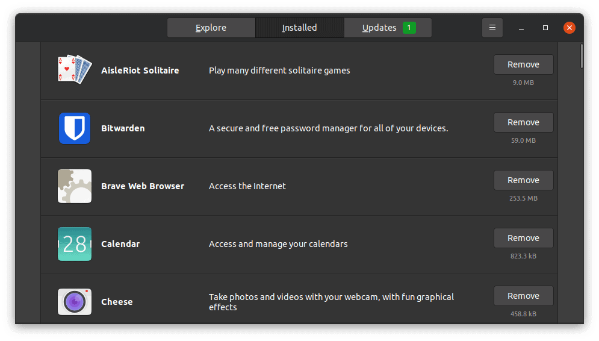
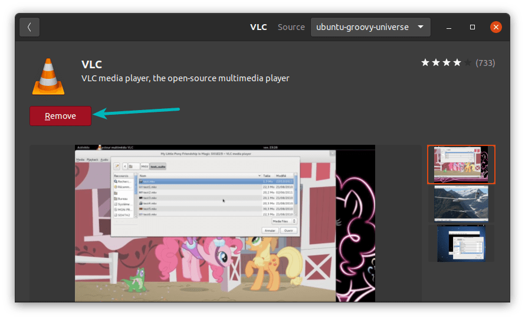
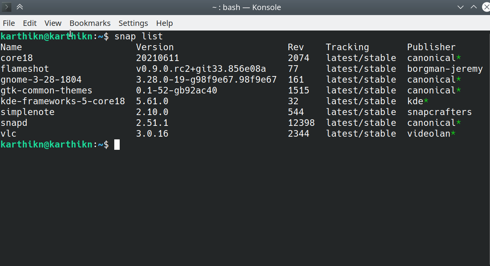

There are various ways to Uninstall Applications in ubuntu
Three most used ways are :
- Remove applications from Ubuntu Software Center
- Remove applications using apt remove command
- Remove snap applications in command line
Method 1: Remove applications using Ubuntu Software Center
Start the Software Center application. You should find it in the dock on the left side or search for it in the menu.
You can see the installed applications in the Installed tab.

When you open an installed application, you should see the option to remove it. Click on it.

It will ask for your account password. Enter it and the applications will be removed in
seconds.
This method works pretty well except in the case when Software Center is misbehaving (it does
that a lot) or if the program is a software library or some other command line utility. You can
always resort to the terminal in such cases.
Method 2: Remove programs from Ubuntu using command line
You know that you can use apt-get install or apt install for installing
applications.
For
uninstalling, you don’t use the apt-get uninstall command but apt-get remove or
apt remove.
All you need to do is to use the command in the following fashion:
sudo apt remove program_nameYou’ll be asked to enter your account password. When you enter it, nothing is visible on the
screen. That’s normal. Just type it blindly and press enter.
The program won’t be removed immediately. You need to confirm it. When it asks for your
conformation, press the enter key or Y key:
Method 3: Uninstall Snap applications in Ubuntu
The previous method works with the DEB packages that you installed using apt command, software
center or directly from the deb file.
Ubuntu also has a new packaging system called Snap. Most of the software you find in the Ubuntu
Software Center are in this Snap package format.
You can remove these applications from the Ubuntu Software Center easily but if you want to use
the command line, here’s what you should do.
List all the snap applications installed to get the package name
snap list

Now use the package name to remove the application from Ubuntu. You won’t be asked for confirmation before removal.
sudo snap remove package_name